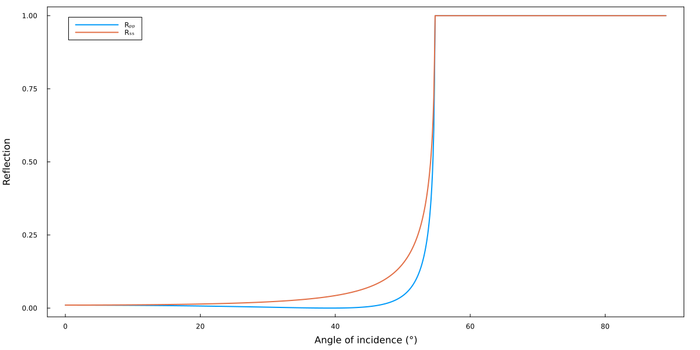

Getting Started
This section offers a concise and user-friendly guide to effectively utilize GeneralizedTransferMatrixMethod.jl.
Installation
The latest version of GeneralizedTransferMatrixMethod.jl can be installed via the built-in package manager. In the Julia REPL, press ] to access the package manager and run
pkg> add GeneralizedTransferMatrixMethodUpdates can be installed similarly using the up command
pkg> up GeneralizedTransferMatrixMethodIt is recommended to use a recent Julia version. This package was tested on Julia v1.7 and onwards, but does not provide any backwards compatibility.
Tutorial
This tutorial goes through some simple examples to explain the key features of GeneralizedTransferMatrixMethod.jl.
In this tutorial we all input parameters are given in SI units. This package supports the use of arbitrary units using the Unitful.jl packages. For more information see Unitful.jl integration.
Glass–Air interface
We should now be able to load the package
using GeneralizedTransferMatrixMethodWe first have to define the materials we want to use. While there are a few materials included in the package (Au, Ag, SiC, MoO₃, ...), we start by defining the permittivities from scratch.
For this we use the @permittivity macro. This macro expects the name of the material we want to define and a function that takes the wavelength λ in meters and returns the full permittivity tensor.
A simple example would be to define Glass with a constant permittivity of 1.5
using LinearAlgebra
@permittivity "Glass" λ -> Diagonal(ones(3)) * 1.5We first load the LinearAlgebra standard library to have access to the function Diagonal, so we don't have to write out the $3 \times 3$ diagonal matrix ourselves. In this example we passed a anonymous function (-> syntax)to the permittivity macro, but we could have also defined the function beforehand
f(λ) = Diagonal(ones(3)) * 1.5
@permittivity "Glass" fThe macro has defined a function called "Glass," which returns a structure of type Layer. Additionally, it has created a function ϵ_Glass, which is identical to the input function we provided.
Glass()Layer
ϵ: ϵ_Glass (function of type typeof(Main.ϵ_Glass))
d: Int64 0
θ: Int64 0
ϕ: Int64 0
ψ: Int64 0
To calculate the reflection of a Glass–Air interface, we must define an Air layer. To accomplish this, we can simply invoke the Layer function without providing any arguments. This will create a Layer with a constant permittivity of 1
Air = Layer()Layer
ϵ: ϵ_vacuum (function of type typeof(ϵ_vacuum))
d: Int64 0
θ: Int64 0
ϕ: Int64 0
ψ: Int64 0
With these two layers, we can now build up a LayeredStructure
Interface = LayeredStructure(
superstrate = Glass(),
substrate = Air
)LayeredStructure
superstrate: Layer
layers: Array{Layer}((0,))
substrate: Layer
We can now calculate the transfer matrix of our interface for a given wavelength λ and angle of incidence α
λ = 1.55e-6 # [m]
α = deg2rad(10) # [rad]
ζ = sin(α) * sqrt(ϵ_Glass(λ)[1,1])
Properties = calculate_structure_properties(ζ, λ, Interface)StructureProperties
Γ: StaticArraysCore.SMatrix{4, 4, Complex, 16}
superstrate: LayerProperties
layers: Array{LayerProperties}((0,))
substrate: LayerProperties
Instead of the angle of incidence α the function calculate_structure_properties actually takes the reduced in-plane wave vector ζ as an input. This structure of type StructureProperties contains the full transfer matrix Γ (denoted as $\Gamma^*$ in reference [3]).
Properties.Γ4×4 StaticArraysCore.SMatrix{4, 4, Complex, 16} with indices SOneTo(4)×SOneTo(4):
0.904347+0.0im -0.0878501+0.0im 0.0+0.0im 0.0+0.0im
-0.0878501+0.0im 0.904347+0.0im 0.0+0.0im 0.0+0.0im
0.0+0.0im 0.0+0.0im 0.905063+0.0im 0.0949374+0.0im
0.0+0.0im 0.0+0.0im 0.0949374+0.0im 0.905063+0.0imIt also contains all the parameters calculated along the way for each individual layer
Properties.superstrateLayerProperties
T: StaticArraysCore.SMatrix{4, 4, Complex, 16}
P: StaticArraysCore.SMatrix{4, 4, ComplexF64, 16}
A: StaticArraysCore.SMatrix{4, 4, Complex, 16}
γ: Array{Complex}((4, 3)) Complex[0.9848077530122081 + 0.0im 0.0 + 0.0im -0.17364817766693025 - 0.0im; 0.0 + 0.0im 1.0 + 0.0im -0.0 + 0.0im; -0.9848077530122081 + 0.0im 0.0 + 0.0im -0.17364817766693028 + 0.0im; 0.0 + 0.0im 1.0 + 0.0im -0.0 + 0.0im]
q: Array{ComplexF64}((4,)) ComplexF64[1.206138244808376 + 0.0im, 1.2061382448083762 - 0.0im, -1.2061382448083764 + 0.0im, -1.2061382448083764 - 0.0im]
Ψ: Array{ComplexF64}((4, 4)) ComplexF64[0.6266376634904282 - 0.0im -0.0 - 0.0im -0.6266376634904284 + 0.0im 0.0 + 0.0im; 0.7793107459128591 + 0.0im -0.0 - 0.0im 0.779310745912859 + 0.0im 0.0 + 0.0im; -0.0 - 0.0im 0.6382556143655292 - 0.0im 0.0 + 0.0im -0.6382556143655292 + 0.0im; -0.0 - 0.0im 0.7698245064499316 + 0.0im 0.0 + 0.0im 0.7698245064499315 + 0.0im]
S: Array{Vector{Complex}}((4,))
Δ: Array{Complex}((4, 4)) Complex[0.0 + 0.0im 0.9698463103929542 + 0.0im 0.0 + 0.0im -0.0 - 0.0im; 1.5 + 0.0im 0.0 + 0.0im 0.0 + 0.0im 0.0 + 0.0im; -0.0 - 0.0im -0.0 - 0.0im 0.0 - 0.0im 1.0 + 0.0im; 0.0 + 0.0im 0.0 + 0.0im 1.4547694655894312 + 0.0im -0.0 - 0.0im]
a: Array{Complex}((6, 6)) Complex[0 + 0im 0 + 0im … 0 + 0im 0 + 0im; 0 + 0im 0 + 0im … 0 + 0im 0 + 0im; … ; 0 + 0im 0 + 0im … 0 + 0im 0 + 0im; 0.0 + 0.0im 0.21267471502406834 + 0.0im … 0.0 + 0.0im 0 + 0im]
M: Array{Float64}((6, 6)) [1.5 0.0 … 0.0 0.0; 0.0 1.5 … 0.0 0.0; … ; 0.0 0.0 … 1.0 0.0; 0.0 0.0 … 0.0 1.0]
We can now calculate the reflection and transmission from these properties
Rₚₚ, Rₛₛ, Rₚₛ, Rₛₚ = reflection(Properties)(0.009436577273720678, 0.011003152746204508, 0.0, 0.0)Tₚ, Tₛ = transmission(ζ, Properties)(0.9905634227262783, 0.9889968472537954)Since it is not generally possible to separate the modes in birefringent media, the transmission function calculates the transmission only considering the input polarization (for more details see reference [5]). In cases where it is possible, one can use the transmission_coeffs function to calculate the transmission.
We can now calculate the angular dependence of the reflection of our interface by replacing the incident angle α by a list of angles
λ = 1.55e-6 # [m]
α = deg2rad.(0:0.1:89) # [rad]
ζ = sin.(α) * sqrt(ϵ_Glass(λ)[1,1])
Properties = calculate_structure_properties.(ζ, Ref(λ), Ref(Interface))
R = reflection.(Properties)To make sure we only broadcast over the reduced in-plane wave vectors ζ we use the Ref command to specify which quantities should not be used for broadcasting.
We now have a list of tupels R, where each element has the shape (Rₚₚ, Rₛₛ, Rₚₛ, Rₛₚ). If we want to split them into separate lists, we can use the Unzip.jl package
using Unzip
Rₚₚ, Rₛₛ, Rₚₛ, Rₛₚ = unzip(R)Finally to visualize our results, we use Plots.jl
using Plots
plot(
rad2deg.(α), [Rₚₚ Rₛₛ],
label = ["Rₚₚ" "Rₛₛ"],
xlabel = "Angle of incidence (°)", ylabel = "Reflection"
)